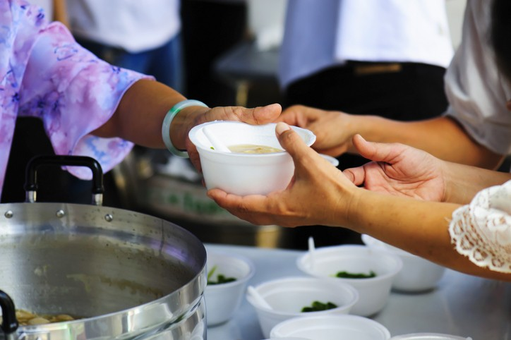

About Us
“There are genuinely sufficient resources in the world to ensure that no one, nowhere,
at no time, should go hungry.”
-Ed Asner
Food waste management in India is becoming a critical problem due
to the continuous increase of the Indian population. Indians waste
the maximum amount of food as much as the whole of the UK consumes.
Weddings and banquetts are enormous supply of food wastage.
Overall, we tend to conclude that, across the town, an absence
of consciousness around waste material is obvious. It is true that the
difficulty of food waste management in India is far additional nonmoving
within the actual handling, storage, and transport of food grains and
vegetables before they even reach the consumer’s plate.
However, the matter of waste material at the retail level cannot
be unnoticed, particularly once 7.5 tons of food is wasted per day.
Considering this problem there had been many approaches done addressing
to this problem.In india there are many NGO's directly contacting the
restaurants for food and also there are applications such as feedie,nofoodwaste,
cow boy foods etc but even though many such solutions exist there has been
no improvement done while reducing food wastage.
Hence we have come up with our project -FOOD RE-SERVE which is a website
that allows the orphanages,oldage homes,NGO's directly contact the restuarant
to avail the details of the leftover food thereby,increasing the communication.
The website contains the details of the quantity of food available in restaurants.
Based on the locality and the quantity of food available it autmatically allots
the restaurants from where the food is supposed to be collected thus reducing manual call work and
specifying the quantity helps us to further control food wastage
so that extra food again can be delivered to other orphanages and NGO's
The website contains the details of the quantity of food available in restaurants
based on the locality.
